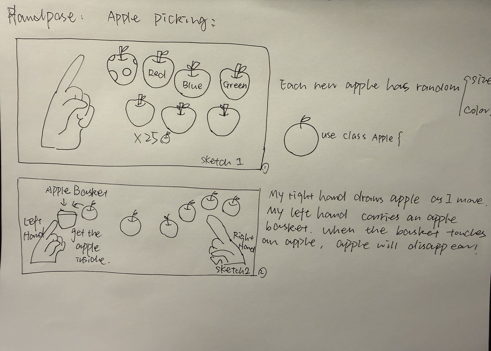

Apple Picking is an interactive piece controlled with both hands. Apples appear on the live camera feed as your fingers move, and each apple varies slightly in size and color. I love the feeling of the apples appearing over and over again.
When using this feature, make sure the camera can see both of your hands. Moving your right index finger will draw an apple. Your left index finger holds a fruit basket; bring it close to the apple to pick it up. I’ve assigned different tasks to each hand so that both drawing apples and picking apples can be done using gestures. The screen displays the live video feed but does not show the green detection points from the original template.
I use HandPose to detect the position of the hand. The code reads the handedness to determine whether a left or right hand has been detected. It also reads the position of the index finger tip. I use the Apple class to create each apple. The random() function selects the size and color when an apple is generated. I place the apples in the apples array. When the right index finger moves more than 30 pixels away from the last position where an apple was drawn, push() adds an apple. When there are more than 25 apples, shift() removes the oldest one. When the left hand appears, the code checks the distance between each apple and the basket. A new array keeps track of the apples that haven’t touched the basket.
I started by drawing two versions of a sketch on paper. The first version mainly involved drawing an apple with my finger. The second version added a fruit basket controlled by my left hand. Later, I made the apple smaller and changed its color to one that more closely resembled a real apple. The ml5.js HandPose camera example served as the starting point for my code. From this, I learned the basics of working with the camera, as well as how to use detectStart() and gotHands(). The ml5.js getting started tutorial demonstrated how to read index_finger_tip.x and .y. The p5.js HandPose tutorial explained handedness. The p5.js dist() reference page explained how to calculate the distance between two positions. I used dist() to control the spacing between the apples and to determine whether the fruit basket was close enough to the apples. My class notes helped me review arrays and classes. I designed the division of labor based on these methods. The right hand draws apples, and the left hand collects them.
